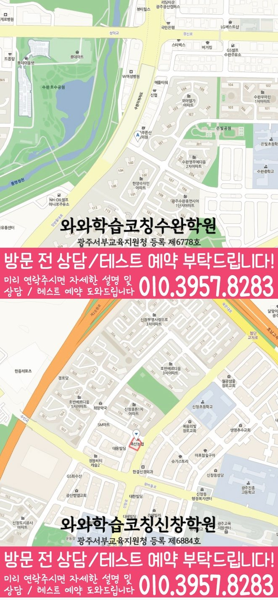

Middle school Korean · English · Math
산월동 중학생 국영수학원
산월동 중학생 국영수학원 선택 전 중등 내신 자료, 최근 오답과 과목별 가능 학년, 센터 위치·비용 확인 기준을 안내합니다.
01 Quick answer
산월동에서 먼저 확인할 내용
산월동에서 중학생 국영수학원을 찾는다면 와와학습코칭센터 첨단점의 과목별 가능 학년을 먼저 확인하세요. 제공된 중학교 참고 자료와 학생의 실제 교재를 대조하고, 학생의 실제 풀이 기록에 맞게 현재 자료에서 확인한 문제를 수업, 복습과 재점검으로 연결하는지 살펴봐야 합니다.
대표 학생 상황
세 과목의 과제 순서와 오답 복습 시점을 스스로 정리하기 어려운 중학생


010-6839-8283010-6839-8283상담 전 핵심 안내
산월동에서 중학생을 위한 영어·수학 학원을 찾는 학생이라면, 현재 성적과 실수를 먼저 정리하고 개념부터 문제풀이, 오답 관리까지 이어지는 학습 흐름이 중요합니다. 지역 센터는 학생별 성취 수준과 목표를 진단해 영어·수학뿐 아니라 국어까지 학습 밸런스를 맞추고, 학습 기록이 이어지도록 코칭과 수업을 함께 진행합니다. 산월동 중학생 국영수학원을 찾는 학부모님이라면 세 과목을 한꺼번에 맡길 수 있는지보다, 우리 아이의 약점이 과목별로 분리되어 관리되는지를 먼저 보시면 좋습니다. 상담 전 확인할 주소는 광주 광산구 월계로 191 404호입니다. 중학생의 경우 평일과 시험 기간의 이동 시간이 달라지는지도 함께 살펴보는 편이 좋습니다.
지금의 공부 흐름을 읽는 기준
산월동 학습 순서를 정할 때는 복습 이력을 바탕으로 복습 시점을 정합니다. 진도만 따라가기보다 단원 이해도, 풀이 습관, 자주 틀리는 유형을 확인해 학생에게 맞는 학습 순서를 설계합니다.
산월동 복습 계획에서는 과제 이행 기록을 바탕으로 반복 오류를 점검합니다. 영어는 어휘·문법·독해 흐름을 점검하고, 수학은 개념·유형·오답 원인을 분류해 반복 보완합니다.
광주광역시 광산구 산월동 중학생 상담에서는 국어 지문 표시 습관, 영어 단어 누적 방식, 수학 풀이 노트의 빈칸을 각각 확인해야 현재 교재 진도도 실제 학습 계획에 반영할 수 있습니다. 이런 어려움을 보이는 학생은 바로 선행을 늘리기보다 지금 틀리는 유형을 말로 설명하고, 다음 과제에서 같은 오류가 줄어드는지를 확인하는 흐름이 적합합니다. 이 사례를 바탕으로 산월동 학생에게 필요한 점검 순서를 확인합니다. 기초 확인형 관점으로 보면 처음에는 성적 한 줄보다 오답이 생긴 과정과 공부 시간의 사용 방식을 함께 확인합니다. 산월동에서 중학생의 현재 상태는 몰라서 틀린 문제와 알고도 실수한 문제를 따로 기록해 살펴야 합니다.
설명을 듣고 풀이로 확인하는 과정
설명보다 이해를 먼저. 학생이 막히는 지점을 질문과 풀이 과정으로 파악하고, 같은 개념을 다른 관점으로 다시 연결해 이해를 구체적으로 만듭니다.
학습 태도까지 함께 점검. 산월동 수업 내용을 점검할 때는 진단 결과를 바탕으로 상담에서 확인할 기준을 정리합니다.
산월동 중학생 상담에서는 질문을 미룬 지점을 수업 전후 기록에서 살펴 재확인 날짜를 남깁니다. 현재 교재 진도를 상담 주제로 함께 확인하면 산월동 학생의 수업 참여, 과제 흐름, 복습 주기를 생활 리듬에 맞춰 판단하기가 수월합니다. 중요한 것은 결과 예측보다 산월동 학생의 현재 상태를 과목별 실행 계획으로 바꾸는 과정입니다. 산월동 상담에서는 진단 결과가 과목별 다음 행동으로 이어지는지 질문하세요.
산월동 학생의 학교 자료를 확인하는 순서
실제 학습 범위를 확인하면, 제공된 중학교 참고 목록은 천곡중·월봉중입니다. 가정에서 기록을 준비하면, 이 목록은 수업 가능 여부를 보장하지 않으며, 상담에서 학생이 가져온 실제 학교 자료를 대조하기 위한 정보입니다.
학생의 현재 자료를 기준으로 보면, 산월동 중학생의 현재 자료를 국어·영어·수학으로 분류하면 시험·교과 범위와 복습할 단원을 더 명확히 볼 수 있습니다. 센터 안내와 비교할 때, 학교 일정이 주간 과제에 반영되는지도 함께 확인합니다.
현재 수준에 맞춘 점검 단계
1. 현재 수준 확인. 학년, 학교 진도, 최근 시험 흐름을 기준으로 부족한 단원과 반복 오답 유형을 먼저 찾아냅니다.
2. 개념 정리와 유형 학습. 바로 문제를 풀기보다 핵심 개념을 정리하고, 대표 유형→응용 문제 순서로 단계적으로 오답 기록의 변화를 확인합니다.
3. 오답 관리와 학습 피드백. 틀린 이유를 개념 부족/계산 실수/독해 오류/문장 이해 등으로 구체화해 다음 풀이 전략까지 정리합니다.
중학생의 경우 같은 위치를 기준으로 평일과 시험 기간의 등원 가능 시각을 각각 확인해야 합니다. 현재 교재 진도 설명은 등록을 서두르기 위한 문구가 아니라 수업 지속성, 보충 방식, 학부모 소통 범위를 확인하는 질문으로 활용하는 편이 바람직합니다. 산월동 중학생 학습 점검 상담 전에는 최근 시험지, 틀린 문제 표시, 학교 과제 일정, 자녀가 어려워한 단원 이름을 간단히 적어 가면 답변이 훨씬 구체적입니다. 상담에서는 산월동 학생의 현재 자료를 보고 어느 과목부터 조정할지 질문하는 편이 좋습니다.
교과 단계별로 나눠 보는 학습 과제
중1. 산월동 수업 내용을 점검할 때는 학습 시간 배분을 바탕으로 다음 보완 순서를 정합니다. 학교 진도에 맞춘 단원별 반복 점검으로 실수 유형을 줄입니다.
중2. 산월동 수업 내용을 점검할 때는 단원별 이해도를 바탕으로 다음 보완 순서를 정합니다. 내신 대비를 위해 빈출 포인트와 오답 패턴을 중심으로 집중 학습합니다.
중3. 내신에서 흔들리는 단원과 문제 유형을 우선순위로 정해 점수 변화를 목표로 합니다. 실전 문제풀이 훈련과 오답 재정리를 통해 시험 당일 실수를 줄입니다.
시험 대비. 학교 시험 범위표와 제공된 자료를 확인해 복습 계획을 재구성합니다. 실수·오독해·계산 오류 등 자주 틀리는 유형을 시험 전 우선 점검합니다.
산월동 국어·영어·수학 학습 계획 상담에서는 출결, 과제 제출, 보충 여부, 질문 기록처럼 학부모가 집에서 확인하기 어려운 항목을 어떤 방식으로 공유하는지 물어보면 좋습니다. 비슷한 학습 흐름을 보이는 학생이라면 수업 직후의 이해도보다 일주일 뒤 같은 유형을 다시 풀 수 있는지가 더 중요하므로 광주광역시 광산구 산월동 학부모는 관리 기록의 주기를 살펴야 합니다. 중학생의 경우 방문 계획은 학교 일정과 실제 교통 시간을 반영해 무리 없는지 살펴보는 편이 좋습니다. 현재 교재 진도는 단순한 부가 정보가 아니라 산월동 중학생이 수업을 빠지지 않고 따라갈 수 있는지 판단하는 운영 기준이 될 수 있습니다.
학습 흐름을 구체화하는 질문
영어. 어휘·문법·독해를 함께 잡아 지문 이해부터 문제 해결까지 끊김 없이 연결합니다.
수학. 산월동 복습 계획에서는 과제 이행 기록을 바탕으로 보완할 단원을 구분합니다.
국어(영수와 함께). 산월동 복습 계획에서는 복습 이력을 바탕으로 상담에서 확인할 기준을 정리합니다.
영수국 로드맵. 산월동 중학생 상담에서는 며칠 뒤 재풀이 결과를 최근 결과와 비교해 다음 과제에 반영합니다.
산월동의 지역 센터는 중학생의 현재 상태를 기준으로 영어·수학(및 국어) 학습을 정리하고, 상담을 통해 내신 현재 수준에 맞춘 학습 방향을 자세히 정리합니다.
02 Consultation examples
산월동 학부모 상담 상황 예시
아래 내용은 실제 고객 후기나 성적 결과가 아니라, 상담에서 확인할 질문을 이해하기 위한 상황 예시입니다.
산월동에서 세 과목을 함께 알아보는 학부모의 상담 장면을 가정했습니다. 최근 풀이를 보며 국어 근거 찾기, 영어 해석, 수학 풀이 단계 중 우선 점검할 부분을 구분해 듣는 상황입니다.
산월동에서 제공된 중학교 참고 정보인 천곡중·월봉중의 목록과 학생의 실제 학교 자료를 대조해 질문하는 상황입니다. 학부모는 학교명 자체보다 시험 범위와 수행평가 일정이 수업 계획에 반영되는지, 다음 확인 시점이 언제인지 기록합니다.
03 FAQ
산월동 중학생 국영수학원 자주 묻는 질문
학부모님이 상담 전에 자주 확인하는 내용을 질문과 답변으로 정리했습니다.
산월동 중학생 국영수학원을 알아볼 때 학생 상태를 어떻게 확인하나요?
국어·영어·수학마다 막히는 원인이 다른데 같은 방식으로 공부한다면 최근 자료를 과목별로 분류하고 보완 행동과 확인 날짜를 따로 정해야 합니다.
산월동 중학생이 국어·영어·수학을 함께 관리할 때 무엇을 구분해야 하나요?
산월동 상담에서는 한 과목의 과제가 다른 과목 복습을 밀어내지 않도록 최소 유지량과 집중 과목을 구분합니다. 국어·영어·수학의 오답 원인이 다르므로 재학습 방법과 확인 날짜도 과목별로 정해야 합니다.
산월동 중학생은 상담 때 어떤 학교 자료를 준비해야 하나요?
제공된 중학교 참고 목록에는 천곡중·월봉중 등이 포함됩니다. 이는 수업 가능 여부를 보장하는 목록이 아니며, 실제 시험 범위표·학교 프린트·수행평가 일정 자료와 센터별 개설 과목을 상담에서 함께 확인해야 합니다.
산월동 센터 등록 전에 다시 확인해야 할 항목은 무엇인가요?
산월동 상담 전에는 실제 방문 위치를 위 센터 확인 정보에서 확인할 수 있습니다. 센터별 교습비 확인 버튼에서 제공 자료를 볼 수 있습니다. 마지막으로 개설 과목, 가능 학년과 통학 가능한 수업 시각을 기록해 비교하세요.
04 Continue
산월동 페이지 이동
카테고리 전체 지역 또는 앞뒤 지역 안내로 이동할 수 있습니다.